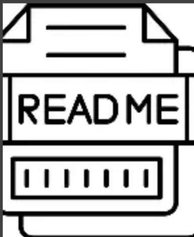
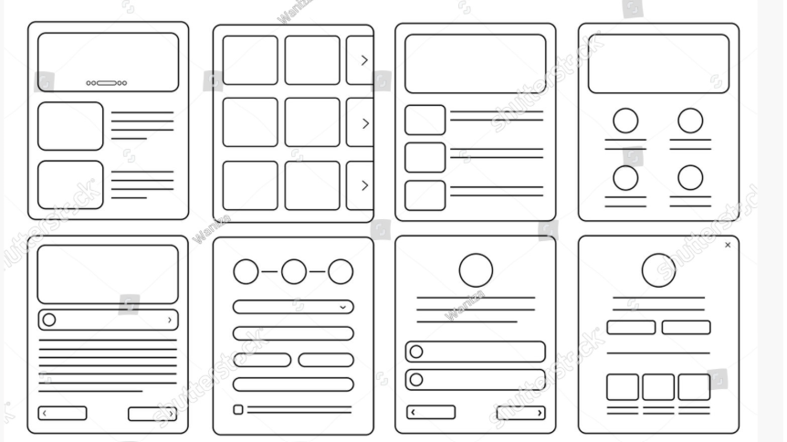
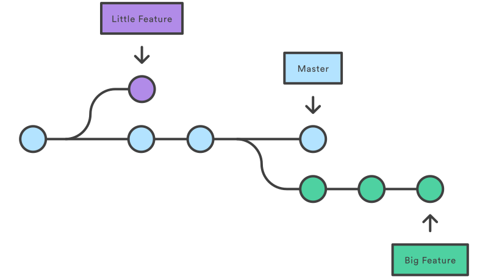

What is a README File?
A README file explains a project. It usually contains information about the purpose of the project, installation instructions, usage examples and important notes for developers.
Read MoreUnderstanding README files, Wireframes and Git Branches

A README file explains a project. It usually contains information about the purpose of the project, installation instructions, usage examples and important notes for developers.
Read More
A wireframe is a visual plan of a webpage. It helps designers and developers organise content and layout before building the final website.
Read More
A Git branch is an independent line of development. It allows developers to work on new features without affecting the main version of a project.
Read More